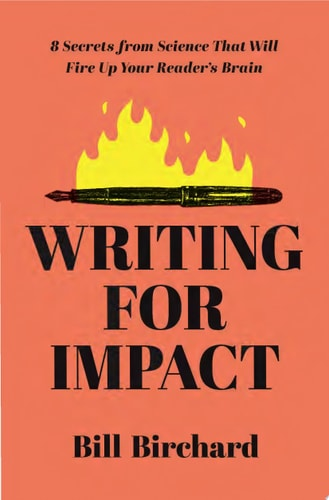
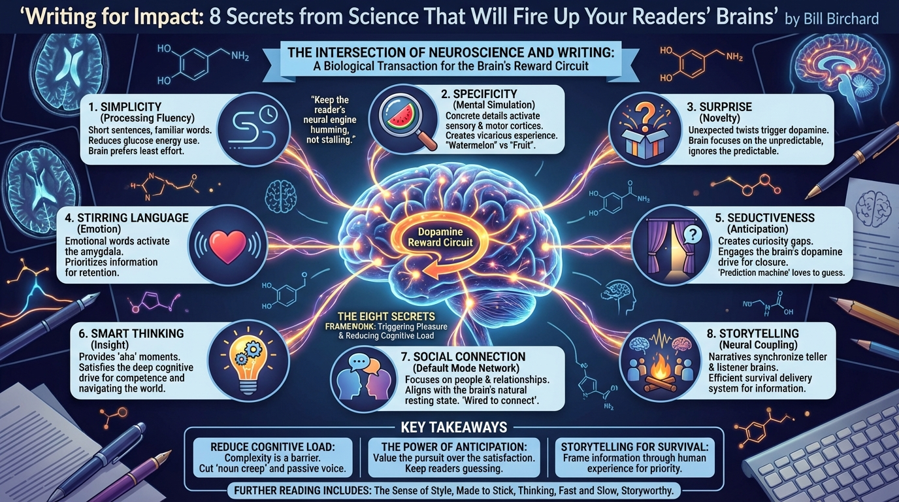

isbn-13: 9781400241491
Audible
AI Generated Summary

The Intersection of Neuroscience and Writing Bill Birchard argues that effective writing is not merely a matter of artistic style or grammatical correctness, but a biological transaction. The book posits that successful authors unconsciously utilize strategies that trigger the brain’s “reward circuit.” By understanding how the brain processes information—specifically through the release of dopamine and the conservation of metabolic energy—writers can craft messages that are physiologically pleasing to the reader.
The “Eight Secrets” Framework The core of the book is structured around eight distinctive characteristics of writing that engage the brain. Birchard synthesizes research from cognitive psychology and neuroscience to identify these elements:
- Simplicity: The brain prefers “processing fluency.” Short sentences and familiar words require less energy (glucose) to process.
- Specificity: Concrete details activate the motor and sensory cortices, causing the brain to “simulate” the experience described.
- Surprise: Novelty triggers dopamine release; the brain is wired to ignore the predictable and focus on the unexpected.
- Stirring Language: Emotional words activate the amygdala, prioritizing the information for retention.
- Seductiveness: This refers to the creation of anticipation. By opening “curiosity gaps,” writers engage the brain’s desire for closure.
- Smart Thinking: Readers value insights that help them navigate the world. Providing “aha” moments satisfies a deep cognitive drive for competence.
- Social Connection: Humans are inherently social; writing that focuses on people and relationships activates the brain’s “default mode network.”
- Storytelling: Narratives synchronize the listener’s brain with the teller’s brain (neural coupling), making it the most efficient delivery system for information.
Simplicity and Cognitive Load The text emphasizes that complexity is often a barrier to comprehension. Birchard cites the “principle of least effort,” noting that the brain naturally gravitates toward information that is easy to digest. He advises cutting “noun creep” (nominalizations) and passive voice not just for stylistic reasons, but because they increase cognitive load. > “You want to keep the reader’s neural engine humming, not stalling. The more work the brain has to do to decode your meaning, the less energy it has to comprehend your message.” (p. 24)
The Power of Specificity Birchard explains that abstract language is processed in a different, less engaged part of the brain than concrete language. When writers use specific nouns and vivid verbs, readers do not just understand the text; they experience it vicariously. > “Specificity implies reality. It creates a simulation in the reader’s mind. When you write ‘fruit,’ the brain sees a vague category. When you write ‘watermelon,’ the brain sees a specific image, feels a specific weight, and tastes a specific sweetness.” (p. 56)
The Role of Anticipation (Seductiveness) The author distinguishes between satisfaction and anticipation. While satisfaction is the consumption of the reward, anticipation is the dopamine-fueled drive toward it. Effective writing keeps the reader in a state of pursuit. > “The brain is a prediction machine. It loves to guess what comes next. If you give away the ending too soon, you kill the dopamine kick. You must seduce the reader into wanting to know more.” (p. 142)
Social Content and the “Default Mode Network” The book highlights that when the brain is at rest, it defaults to thinking about other people and social relationships. Therefore, framing technical or abstract content through a human lens aligns with the brain’s natural state. > “We are wired to connect. Writing that lacks a human element feels cold and distant because it fails to engage the brain’s social radar.” (p. 188)
Storytelling as a Survival Mechanism Birchard frames storytelling not as entertainment, but as an evolutionary tool for survival. Stories allow humans to learn from the experiences of others without facing the direct risks. Consequently, the brain prioritizes narrative information over raw data.
Further Reading
- The Sense of Style: The Thinking Person’s Guide to Writing in the 21st Century by Steven Pinker
- Made to Stick: Why Some Ideas Survive and Others Die by Chip Heath and Dan Heath
- Thinking, Fast and Slow by Daniel Kahneman
- Storyworthy: Engage, Teach, Persuade, and Change Your Life through the Power of Storytelling by Matthew Dicks